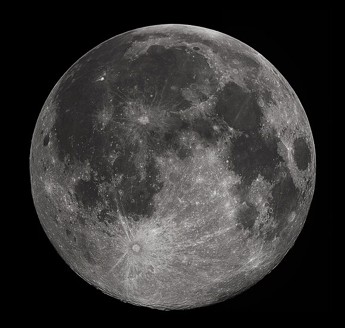

1610: First telescopic observation of the night sky, discovery of the
Galilean moons.
-
By Galileo Galilei
 Venice
Venice
 England
England
 Great Britin
Great Britin
 Sicily
Sicily
1813: First exposition of the
rocket equation based on Newton's third law of motion: Treatise on the Motion of Rockets.
-
By William Moore
UK
1840: First clear telescopic photograph of another world: the
Moon.

-
By John William Draper
United States
1845: First proper observation of other galaxies which are termed
whirlpool nebulae.
-
By William Parsons
UK
After the 20th century, space exploration took flight with satellites, manned missions, and probes. Milestones include the Moon landing in 1969, the International Space Station, and rovers exploring Mars, revolutionizing our understanding of the universe.
June 10, 2003: The (MER A) and Spirit rovers, part of NASA’s Mars Exploration Rover
(MER) program, were launched in 2003 and landed on Mars in January 2004. Their mission was to explore the surface of Mars to search for and characterize evidence of water, study the planet’s geology, and assess its habitability.
-
By NASA

July 7, 2003: as part of the Mars Exploration Rover program and landed on January 25, 2004, at Meridiani Planum, a region chosen for its flat terrain and the presence of hematite, a mineral often formed in water.
-
By NASA
June 10, 2003: Curosity is a car-sized
Mars rover
exploring
Gale crater and Mount Sharp on Mars as part of NASA's
Mars Science Laboratory (MSL) missions. Curiosity was launched from
Cape Carnival (CCAFS) on November 26, 2011, at 15:02:00 UTC and landed on
Aeolis Palus inside Gale crater on Mars on August 6, 2012, 05:17:57 UTC
-
By NASA
20 November 1998: The International Space Station (ISS) is a large space station that was assembled and is maintained in low Earth orbit by a collaboration of five space agencies and their contractors: NASA (United States),
ESA (Europe) ,
Roscosmos (Russia)
JAXA (Japan) , and
,CSA (Canada). The ISS is the largest space station ever built. Its primary purpose is to perform microgravity and space environment experiments.